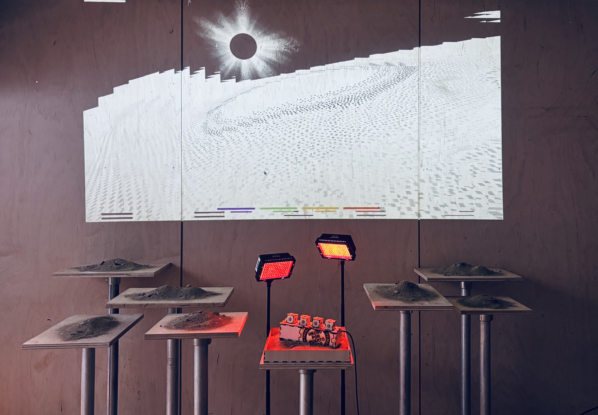

Sueños de un Espectro Tinglar ("Dreams of a Spectre Leatherback") is an offering to the Caribbean Sea, fragmented memories of dancing to the rhythm of waves at the beach. A handmade wooden MIDI toy sits among piles of sand as the centerpiece of a multimedia instalation, inviting participants to play by moving and rotating cubes to arranging soundscapes, drumming, and spoken word into music. A black and white digital sound-reactive landscape of a beach is projected, accompanying participants and the music surprises they make.